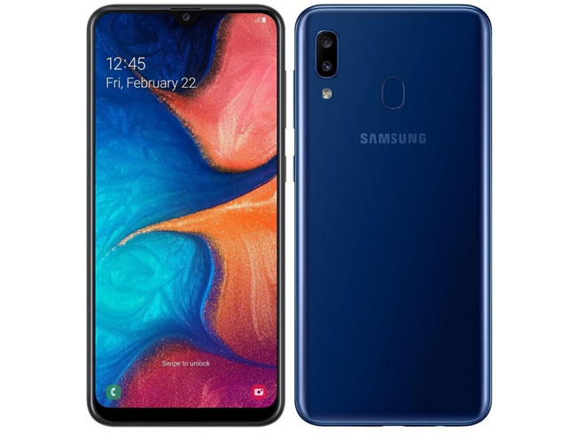
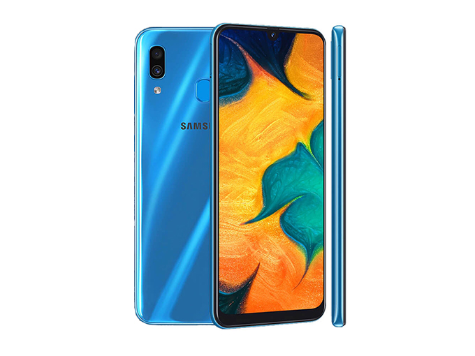
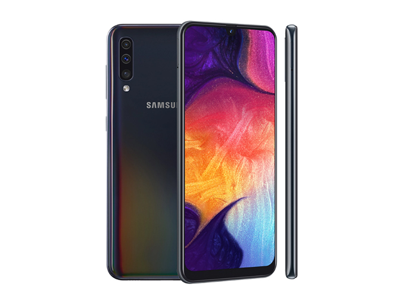
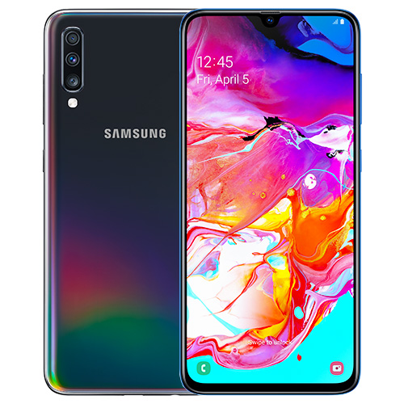

The new Galaxy A is specially created for you. Comes with a revolutionary camera that allows you to record every
story.
The new design will help you immerse yourself in various experiences that never existed before.
With a battery that comes with the device The freedom
of living that you can define Secure with the Samsung Knox system while protecting your privacy.

SAMGSUNG GALAXY A20
The bigger screen saw wider. 6.4 inch HD + sAMOLED screen,
ready for you to enjoy every entertainment Whether you are a favorite sitcom or your favorite
MMORPGs with the Infinity-V display of the Galaxy A20, the entertainment experience on your phone changes.
Come and experience
the new experience on the screen with a v-cut screen.

SAMGSUNG GALAXY A30
Elegant color, spell every eye
The Galaxy A30 is only 7.7 mm thin, but still maintains durability when used. To touch smooth hands Elegant
design with
premium grade glass in the back cover and supports fingerprint activation. Ready to choose from 3 colors,
white, black and blue

SAMGSUNG GALAXY A50
Three cameras for every important moment
The Galaxy A50's three cameras are equipped with a special wide-angle camera with a 123 degree view, allowing
you to
capture wide-angle images in one image, 25MP (F.17) resolution camera for bright images in every light difference.
Time of day And complete with a camera with a 5MP resolution for you to get clear, crisp, clear images that
can be adjusted deep and shallow.

SAMGSUNG GALAXY A70
Ultra wide angle For a special image
The 123 degree ultra wide angle camera lets you capture impressive images in a wider view in a single image.
Makes capturing
panoramic images easy And make every image special and realistic